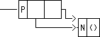

<html><head><title>

Memoisation Queues etc.

</title></head>
<BODY bgcolor = "white">


<h1>
<center>
    LECTURE 13 <br>   Aspects of the Imperative Paradigm<br>
     Memoisation - implementation of queues.
</center>

</h1>

<hr>
<!-- ============================================================= -->


<a href = "lecture13.html#memo">
Memoisation lets us wrap imperative technology in a functional form</a><br>

<a href = "michie.html">
An extract from the original paper  "'Memo' Functions and Machine Learning"
</a><br>

<a href = "lecture13.html#memo_n">
  2   Memoising a function which takes an unknown number of
arguments</a><br>

<a href = "lecture13.html#queues">
  3   Queues are more easily written efficiently in the Imperative
Paradigm</a><br>

<pre>
      3.1   Abstract Characterisation of Queues
      3.2   Implementation of Queues
</pre>

<h2>
<a name = "memo">
Memoisation lets us wrap imperative technology in a functional form
</a></h2><br>

<p>
One of  the snags  about the  functional paradigm  is that  we often  have  to
"massage" a nice clear functional program into  a less clear form in order  to
obtain efficiency. <em>Memoisation</em>
is a technique of saving particular values of a
function for future use, and provides a nearly automatic way of improving  the
speed of a function at some cost in space. As such, it can save a lot of  work
in  designing  <em>datastructures</em>.
Indeed,  we   can  think  of  the  design   of
datastructures as the determination of which functions in a computation are to
be performed in constant (or near constant) time.

<p>
Memoisation is  implemented by  a higher-order  function which  we shall  call
<tt>memoise</tt>.
This, in our version, takes one argument, a function, and returns one
result, a function which does the  same computation as the original  function,
but which, for any given argument, looks to see if it has already encountered
that argument, and if so, trots out the previously computed value. So, given
a Fibonnaci function, one might define a memoised version of it thus:

<pre>
    (define mfib   (memoise fib))
</pre>

<p>
However, <tt>fib</tt>
itself is defined recursively, and so it is better to ensure
that, in evaluating the recursive calls, the memoised version is called. This
is possible in Scheme because of the rules applying to global variables - in
effect a <tt>define</tt> is an assignment.

<pre>
    (define fib (memoise fib))
</pre>

<p>
Note that  any function  that is  memoised <em>must</em>
be a  pure function,  without
side-effects!

<p>
Now let us  define <tt>memoise</tt>.
Every  time we memoise  a new function  <tt>f</tt> we  will
create a table [1] to hold argument-value pairs. The result of the memoisation
is a function  [2] which  [3] looks  up its  argument <tt>x</tt>
in the  <tt>table</tt>. If  an
argument-value pair is  found [4],  then the  <tt>cdr</tt>
of  the pair  is the  value.
Otherwise, [5] we use the original function <tt> f</tt>
to compute the value <tt>(f x)</tt>  and
store this value in the table [6] , returning it as the result of the function
[7]


<pre><code>
(define (memoise f)
    (let ((table '()))                                      ; [1]
        (lambda (x)                                         ; [2]
            (let ((pair (assoc x table)))                   ; [3]
                (if pair (cdr pair)                         ; [4]
                    (let ((result (f x)))                   ; [5]
                        (set! table                         ; [6]
                           (cons (cons x result) table))
                        result) ; end let                   ; [7]
                    ) ; end if
                )  ; end let
            ) ; end lambda
        ) ; end let
    ) ; end define
</code></pre>

<p>
Recall the definition of <tt>fib</tt> from lecture 8:

<pre><code>
(define (fib n)
    (if (&lt n 2)
        n
        (+ (fib (- n 1)) (fib (- n 2)))
        )
    )
</code></pre>

<p>
When we considered the evaluation of <tt>fib</tt>
in lecture 10 we wrote it out
something like this:

<pre>
<code>
    (fib 5)
</code>
    ==> (+ (fib 4) (fib 3))
    ==> (+ (+ (fib 3) (fib 2))  (+ (fib 2) (fib 1)))
    ==> (+ (+ (+ (fib 2) (fib 1)) (+ (fib 1) (fib 0)))
                           (+ (+ (fib 1) (fib 0)) 1))

    ==> (+ (+ (+ (+ (fib 1) (fib 0)) 1) (+ 1 0))
                           (+ (+ 1 0) 1))

    ==> (+ (+ (+ (+ 1 0) 1) (+ 1 0))
                           (+ (+ 1 0) 1))

    ==> 5
</pre>

<p>
It is manifest from this example that  the evaluation of <tt>fib</tt>
as defined  above
is of exponential complexity because it is called twice in each recursion with
an argument only one or two less. We can see this pattern in the execution  of
<tt>fib</tt> by UMASS Scheme:

<pre><code>
(trace fib)
(fib 5)
</code></pre>


<pre>
(fib  5 )
|(fib  4 )
| (fib  3 )
| |(fib  2 )
| | (fib  1 )
| | fib   = 1
| | (fib  0 )
| | fib   = 0
| |fib   = 1
| |(fib  1 )     ; reevaluation
| |fib   = 1
| fib   = 2
| (fib  2 )      ; reevaluation
| |(fib  1 )     ; reevaluation
| |fib   = 1
| |(fib  0 )     ; reevaluation
| |fib   = 0
| fib   = 1
|fib   = 3
|(fib  3 )       ; reevaluation
| (fib  2 )
| |(fib  1 )
| |fib   = 1
| |(fib  0 )
| |fib   = 0
| fib   = 1
| (fib  1 )
| fib   = 1
|fib   = 2
fib   = 5
</pre>

<p>
Now let us memoise <tt>fib</tt> and see what we get:

<pre><code>
(define fib (memoise fib))

(trace fib)
(fib 5)

</code></pre>

<p>
In this trace, we are seeing both the original <tt>fib</tt>
function being called, and
its memoised version. They are both called "<tt>fib</tt>".

<pre>
(fib  5 )           memoised
|(fib  5 )          non-memoised
| (fib  4 )
| |(fib  4 )
| | (fib  3 )
| | |(fib  3 )
| | | (fib  2 )
| | | |(fib  2 )
| | | | (fib  1 )
| | | | |(fib  1 )
| | | | |fib   = 1
| | | | fib   = 1
| | | | (fib  0 )
| | | | |(fib  0 )
| | | | |fib   = 0
| | | | fib   = 0
| | | |fib   = 1
| | | fib   = 1
| | | (fib  1 )     re-evaluation - answer from table
| | | fib   = 1
| | |fib   = 2
| | fib   = 2
| | (fib  2 )       re-evaluation - answer from table
| | fib   = 1
| |fib   = 3
| fib   = 3
| (fib  3 )         re-evaluation - answer from table
| fib   = 2
|fib   = 5
fib   = 5
</pre>

<p>
The gain from memoisation does not appear significant here, but consider
<tt>(fib 20)</tt>
- the non-memoised version will need a million calls, whereas
the memoised
version will need 20 each of the memoised and non-memoised versions.

<p>
There is a O(n) time  cost of looking up the  table in this implementation  of
memoisation. Given a uniform way of ordering Scheme entities we could define a
O(log n) time function for doing the look-up using the ordered-trees we talked
about in our lectures on the representation of sets. Or the ordering  function
could be made an argument to the memoise function.

<p>
Now, when we previously considered the Fibonnaci function it turned out to  be
quite easy  to reformulate  as  a recursive  function with  linear  complexity
simply by using an iterative form  in which we passed in accumulated  previous
values. It is  not necessarily easy  or convenient  to do the  same thing  for
every  function  we  write.  Memoisation  is  particularly  useful  in  tuning
functional parsers of the kind we have written earlier in the course.

<p>
One potential problem with memoisation is that the store used for the table is
going to be tied up beyond its useful life. Of course if the user loses access
to the  memoised  function, the  table  will be  garbage-collected.  However a
memoised function might  be kept  with a  table which  will never  in fact  be
accessed again.

<p>
Some systems (e.g. Poplog, Java)  provide a facility for deleting  information
in these circumstances.


<h2>
<a name = "memo_n">
Memoising a function which takes an unknown number of arguments
</a>
</h2>
<br>

<p>
We can memoise a function that takes  an unknown number of arguments by  using
the <tt>(lambda
x ...)</tt> form. Recall that in this form, the variable <tt>x</tt>
is bound  to
a  list  of   the  actual   parameters.  Apart   from  this   change  to   the
<tt>lambda</tt>-expression,
the only change that needs to be made is to replace <tt>(f  x)</tt>,
which applies <tt>f</tt>
to one argument <tt>x</tt>, by <tt>(apply f x)</tt>
which applies <tt>f</tt> to the  list
of arguments.

<pre><code>
(define (memoise f)
    (let ((table '()))
        (lambda x
            (let ((pair (assoc x table)))
                (if pair (cdr pair)
                    (let ((result (apply f x)))
                        (set! table (cons (cons x result) table))
                        result) ; end let
                    ) ; end if
                )  ; end let
            ) ; end lambda
        ) ; end let
    ) ; end define
</code></pre>


<p>
Reloading the definition of <tt>fib</tt>
given above, let us try this new definition of
<tt>memoise</tt>.

<pre><code>
(define fib (memoise fib))
(trace fib)
(fib 5)
</code></pre>

<p>
Now, with only the memoised version of <tt>fib</tt>
being traced, we obtain:

<pre><code>
(fib  5 )
</code></pre>

<pre>
|(fib  4 )
| (fib  3 )
| |(fib  2 )
| | (fib  1 )
| | fib   = 1
| | (fib  0 )
| | fib   = 0
| |fib   = 1
| |(fib  1 )
| |fib   = 1
| fib   = 2
| (fib  2 )
| fib   = 1
|fib   = 3
|(fib  3 )
|fib   = 2
fib   = 5
</pre>

<p>We can see the table being formed if we <em>reload</em> <tt>fib</tt>
and  trace
<tt>assoc</tt>:

<pre><code>

(trace assoc)
(define fib (memoise fib))
(trace fib)
(fib 5)

</code></pre>

<pre>
(fib  5 )
|(assoc  (5) () )
|assoc   = &lt;false>
|(fib  4 )
| (assoc  (4) () )
| assoc   = &lt;false>
| (fib  3 )
| |(assoc  (3) () )
| |assoc   = &lt;false>
| |(fib  2 )
| | (assoc  (2) () )
| | assoc   = &lt;false>
| | (fib  1 )
| | |(assoc  (1) () )
| | |assoc   = &lt;false>
| | fib   = 1
| | (fib  0 )
| | |(assoc  (0) (((1) . 1)) )
| | | (assoc  (0) () )
| | | assoc   = &lt;false>
| | |assoc   = &lt;false>
| | fib   = 0
| |fib   = 1
| |(fib  1 )
| | (assoc  (1) (((2) . 1) ((0) . 0) ((1) . 1)) )
| | |(assoc  (1) (((0) . 0) ((1) . 1)) )
| | | (assoc  (1) (((1) . 1)) )
| | | assoc   = ((1) . 1)
| | |assoc   = ((1) . 1)
| | assoc   = ((1) . 1)
| |fib   = 1
| fib   = 2
| (fib  2 )
| |(assoc  (2) (((3) . 2) ((2) . 1) ((0) . 0) ((1) . 1)) )
| | (assoc  (2) (((2) . 1) ((0) . 0) ((1) . 1)) )
| | assoc   = ((2) . 1)
| |assoc   = ((2) . 1)
| fib   = 1
|fib   = 3
|(fib  3 )
| (assoc  (3) (((4) . 3) ((3) . 2) ((2) . 1) ((0) . 0) ((1) . 1)) )
| |(assoc  (3) (((3) . 2) ((2) . 1) ((0) . 0) ((1) . 1)) )
| |assoc   = ((3) . 2)
| assoc   = ((3) . 2)
|fib   = 2
fib   = 5

</pre>


<h2>
<a name = "queues">
Queues are more easily written efficiently in the Imperative Paradigm
</a>
</h2><br>

<p>
As an example  of a  problem that  is more  easily treated  in the  imperative
paradigm than in the functional paradigm, let us consider queues. A queue is a
entity into which other entities  are <em>inserted</em>
one at  a time, and from  which
they are <em>removed</em>
one at a time,  with the requirement that the order in  which
entities come out of  the queue is the  same as that which  they were put  in.
Thus it implements what Americans call a "line".

<p>
<em>3.1  Abstract Characterisation of Queues</em>

<p>
A queue is defined abstractly by the following operations

<pre>
    (make_queue)          Make a new, empty, queue.

    (empty_queue? Q)      Are there any elements in the queue?

    (front Q)             Get the first entry in the queue.

    (rear Q)              Get the last entry in the queue.

    (insert_queue! Q item)  Put a new item in the queue.

    (delete_queue Q)        Take the first item off the queue.
</pre>



<em>3.2  Implementation of Queues</em>


<p>
If we realise these operations using a standard functional list representation
we get inefficiencies - <tt>insert_queue!</tt>
is <em>O(n)</em> using  the simplest approach.

Instead, we can use a representation of a queue as a pair whose
<tt>car</tt>
points  to
the front of the list of items in  the queue, and whose <tt>cdr</tt>
points to the  end
of the queue. Thus a queue  containing the numbers 1,2,3 would be  represented
like this:</p>


<p>Let
us   define  some   abstract   operators  to   use  internally   in   our
queue-manipulation package:


<pre><code>
(define front-ptr car)
(define rear-ptr cdr)
(define set-front-ptr! set-car!)
(define set-rear-ptr!  set-cdr!)
</code></pre>

We can now define our higher-level abstractions:

<pre><code>
(define (empty_queue? Q)
    (null? (front-ptr Q)))
</code></pre>

<pre><code>
(define (make_queue)
    (cons '() '() ))
</code></pre>


<pre><code>
(define (front Q)
    (if (empty_queue? Q)
        (error "front called with empty queue")
        (car (front-ptr Q))))
</code></pre>

<pre><code>
(example '(empty_queue? (make_queue)) #t)
</code></pre>



<p>
Now let us consider how to write <tt>insert_queue!</tt>.
We will perform the  insertion
in 3 stages. Suppose we want to add  the integer 4 to the queue. First (1)  we
make a pair to hold the new element:</p>


<p>
What happens after this depends on whether or not the queue is empty. If it is
non-empty then (4) we link this pair into the list of queue elements:</p>




<p>
Finally (5)  we make  the rear  pointer of  the queue  point to  the new  last
element </p>


<p>
In the case of the empty queue: </p>



<p>we make the new pair as before:</p>




<p>
Then (2) we make the front pointer of the queue point to the new pair:</p>


<p>
Finally (3) we make the rear pointer of the queue also point to the new
pair</p>


<pre><code>
(define (insert_queue! Q item)
    (let ((pair (cons item '())))          ; (1) Make pair to hold new item
        (cond
            ((empty_queue? Q)
             (set-front-ptr! Q pair)          ; (2)
             (set-rear-ptr! Q pair)           ; (3)
             Q)
            (else
                (set-cdr! (rear-ptr Q) pair)  ;  (4)
                (set-rear-ptr! Q pair)        ;  (5)
                Q)
            )
        )
    )
</code></pre>

<pre><code>
(define (make_queue_list list)
    (let ((Q (make_queue)))
        (for-each (lambda (x) (insert_queue! Q x)) list)
        Q
        )
    )

(example '(make_queue_list '(1 2 3)) '((1 2 3) 3))

</code></pre>
 

<p>
Warning this example runs, but the list structure made by <tt>'((1
2 3) 3)</tt> is not
a queue since it does not exhibit the requisite sharing. It has the
structure:</p>


<p>
This example reminds us  that the <tt>equal?</tt> predicate  does
<em>not</em>
test
whether  two
list-structures are structurally equivalent - that is to say it does not  test
that  there  is  a  one-to-one   correspondence  between  the  pairs  of   one
list-structure and the other.

<p>
To delete an element from a queue we simply adjust the front-pointer to  point
to the <tt>cdr</tt> of the list of members of the queue:


<pre><code>

(define (delete_queue! Q)
    (cond
        ((empty_queue? Q)
         (error "deleting element from empty queue"))
        (else
            (set-front-ptr! Q (cdr (front-ptr Q)))
            )
        )
    )
</code></pre>

</body>
</html>
